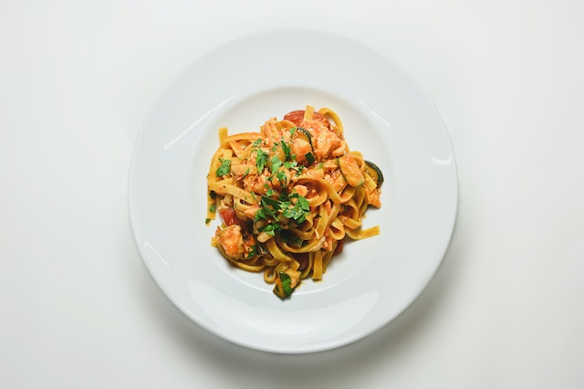

Fettuccine Alfredo
Today Special is : Fettuccine Pasta

Description
Rich and creamy Fettuccine Alfredo is one of the easiest and most
satisfying pasta dishes to make at home. Fresh cream is combined with
parmesan cheese and butter to make a luscious Alfredo sauce in only
minutes.
Ingredients
- 24 ounces dry fettuccine pasta
- 1 cup butter
- ¾ pint heavy cream
- salt and pepper to taste
- 1 dash garlic salt
- ¾ cup grated Romano cheese
- ½ cup grated Parmesan cheese
Steps
-
Bring a large pot of lightly salted water to a boil. Add fettuccine and
cook for 8 to 10 minutes or until al drain
-
Melt butter into cream in a large saucepan over low heat; add salt,
pepper, and garlic salt.
-
Increase the heat to medium; stir in grated Romano and Parmesan cheese
until melted and sauce has thickened.
-
Add cooked pasta to sauce and toss until thoroughly coated; serve
immediately.
For more recipes click below